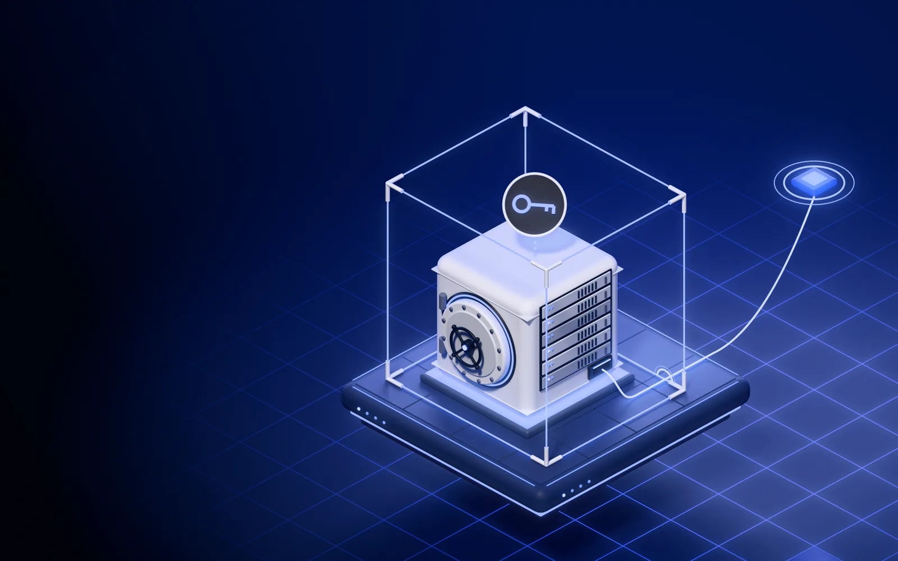

Op aanvraagVidimus Privé
Uw eigen omgeving, de tijd en het anker buiten uw bereik.
Voor organisaties die niet op een gedeeld platform kunnen of willen. Eigen sleutels, een eigen adres en de koppeling met uw systeem door ons gebouwd. Tijdstempels en ankers komen van buiten.
vanaf € 25 000 opzet + € 18 000 per jaar · we zetten de omgeving op na ondertekening

Eén omgeving, voor één organisatie.
Een eigen omgeving
Vidimus, apart opgezet voor uw organisatie en niet gedeeld met andere klanten. Staat ze niet bij u, dan beheert Vidimus de servers.
Eigen sleutels
U houdt de sleutel die uw inhoud opent en een eigen certificaatautoriteit (CA). We richten ze in bij de opzet.
Een eigen adres
Uw mensen en uw systemen werken op een adres dat alleen van uw omgeving is.
De koppeling, door ons gebouwd
Wij bouwen de verbinding tussen uw systeem en uw omgeving.
Eigen omgeving, geen eigen waarheid.
Bewijs uit uw eigen systeem blijft uw eigen woord. Daarom blijft dit buiten uw bereik, en buiten het onze.
In uw kader
- de omgeving en haar adres
- uw sleutels en uw CA
- uw registraties en uw systeem
Daarbuiten
- De tijd
- De tijdstempels met bewijswaarde komen van een externe tijdstempeldienst, niet van u en niet van ons. De tijd in de registratie zelf is wat het toestel opgaf.
- Het anker
- Ankers staan in Bitcoin. Wijzigt iemand een registratie, dan stemt ze niet meer overeen voor wie nakijkt, ook als u of wij het zouden proberen. Wat niet wordt voorgelegd, kan niemand nakijken.
- De controle
- Wie de bundel krijgt, kan die nakijken zonder Vidimus en zonder uw systeem. Voor de inhoud is ook het document nodig.
De controle hierboven is een registratie op het gedeelde platform. Vidimus oordeelt niet, het vergelijkt. Zelf narekenen
De inhoudssleutel en de CA houdt u, niet wij.
Vidimus ontvangt vingerafdrukken, handtekeningen en de versleutelde inhoud, en wat de omgeving nodig heeft om te werken: accounts, certificaten met namen en technische logs. Zonder uw sleutel kunnen wij uw documenten niet openen. De software die de sleutel gebruikt, komt wel van ons.
| Sleutel | Wie houdt ze |
|---|---|
| Tekensleutel van mensentoont wie iets vastlegde | Hun eigen telefoon. |
| Tekensleutel van systemen en meetbronnentoont welk toestel het vastlegde | Leggen we vast bij de opzet: in uw systeem of bij Vidimus. |
| Certificatenkoppelen een sleutel aan een naam | U, in een eigen CA die we bij de opzet inrichten. Zo kan Vidimus geen certificaat op uw naam uitgeven. |
| Inhoudssleutelopent uw documenten | U, en wie u de inhoud zelf deelt. Toestellen en systemen versleutelen vóór het verzenden. |
| Herstelals een sleutel verloren gaat | U, in een herstelbestand met een wachtzin. Dat maakt u vóór de start. |
Wat daar tegenover staat: bent u sleutel en herstelbestand kwijt, dan blijft de inhoud onleesbaar, ook voor ons. Wat onze server niet kan lezen, kan ze ook niet doorzoeken.
Uitzonderingen: een webpagina die wij voor u vastleggen, halen wij zelf op. Metingen zijn getallen in klare tekst. Antwoorden van een tegenpartij en de akkoorden van uw mensen kunnen wij lezen, omdat wij ze zelf vastleggen.
Nog niet beschikbaar: herstel verdeeld over meerdere personen en eigen beveiligingshardware (HSM).
Opzet, daarna een abonnement.
| Soort | Opzet | Abonnement |
|---|---|---|
| Eigen omgevingéén organisatie, door ons opgezet | vanaf € 25 000 | € 18 000 per jaar |
In het abonnement: de servers, de tijdstempels, de updates, de bewaking en de ondersteuning van uw omgeving. Grotere organisaties of installatie bij u: op offerte. Prijzen excl. btw.
Wanneer een gedeeld platform niet kan.
Het gaat om uw eisen, niet om uw sector
Voor organisaties die niet op een gedeeld platform kunnen of willen: bijvoorbeeld advocatenkantoren, banken, pharma en overheden. Dat zijn voorbeelden, geen afbakening.
Wanneer het niet nodig is
- Kan uw organisatie wel op het gedeelde platform? Dan hebt u Privé niet nodig: daar begint u vanaf € 0 per maand.
- Bekijk de prijzen van het gedeelde platform
Wat u wil weten.
Staat de omgeving meteen klaar?
Nee. Vidimus Privé is op aanvraag: we zetten de omgeving op per klant, na ondertekening. Wat u vandaag al kunt nakijken, is een registratie op het gedeelde platform.
Als de omgeving van ons is, waarom is het bewijs dan onafhankelijk?
Omdat de tijd en het anker niet bij u liggen. De tijdstempels met bewijswaarde komen van een externe tijdstempeldienst en de ankers staan in Bitcoin. Wat u vastlegt, blijft uw eigen verklaring.
Kan het ook bij ons geïnstalleerd worden?
Dat kan op offerte. Er draait nog geen installatie; we bouwen ze na ondertekening. Ook dan komen tijdstempels en ankers van buiten.
Kunnen we in één keer betalen?
Voor een vaste termijn wel, op offerte. Met een afgesproken volume en altijd met een einddatum.
Wie houdt de sleutels?
De inhoudssleutel en de CA houdt u, niet Vidimus. Mensen tekenen met hun eigen telefoon en de certificaten komen uit uw eigen CA. Waar de sleutels van systemen en meetbronnen staan, leggen we vast bij de opzet. Bent u sleutel en herstelbestand kwijt, dan kunnen wij de inhoud niet terughalen.
Past dit bij uw organisatie? Dat zoeken we in 15 minuten uit.
We bekijken samen welk systeem u wil koppelen en of u een eigen omgeving nodig hebt. Past ze, dan zetten we ze op na ondertekening.